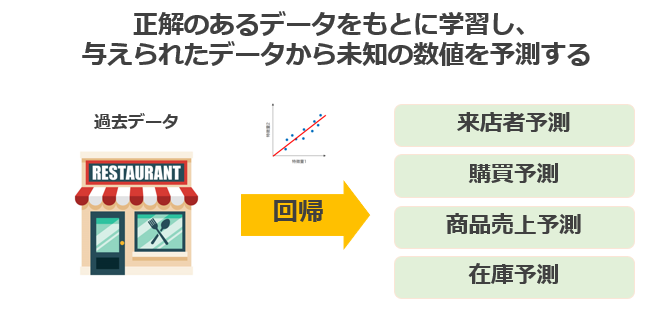

教師なし学習とは？
教師なし学習とは、データに正解を与えない状態で学習させる学習手法です
データ内に存在する未知のパターンを見つけ出すことができます。
また、教師なし学習は正解、不正解のデータを集める必要がないため
教師なし学習との違いは問いに対しての正解があるかないかです。
正解をわざと与えない→教師なし学習
明確な正解がない→強化学習
活用事例をご紹介
出典：機械学習の主要アルゴリズムを事例から学べるレシピ紹介
スーパーマーケットの購買データから、平均購買年齢が高い商品、季節によって売り上げが増加する商品を自動的にマッピングします。